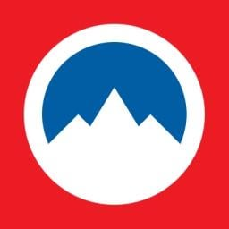
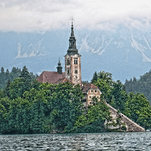
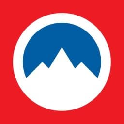
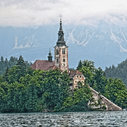

Descubra algumas curiosidades sobre este íncrivel País Europeu chamado Eslovênia!
Assuntos Daora sobre este País
Veja também:
Assista o hino deste país íncrivel
 



Você Sabia ?
A Guerra de Independência da Eslovênia em 1991, também conhecida como a Guerra de Dez Dias, Foi a primeira guerra na Europa desde a Segunda Guerra Mundial.
Você Sabia ?
Skocjan Caves, é um dos maiores cânions subterrâneos do mundo e onde é possível encontrar mais de quatro mil passagens subterrâneas, grandes câmaras e cachoeiras lindíssimas.
Você Sabia ?
Em 1990, a Eslovênia estabeleceu a democracia pela primeira vez desde a Primeira Guerra Mundial..